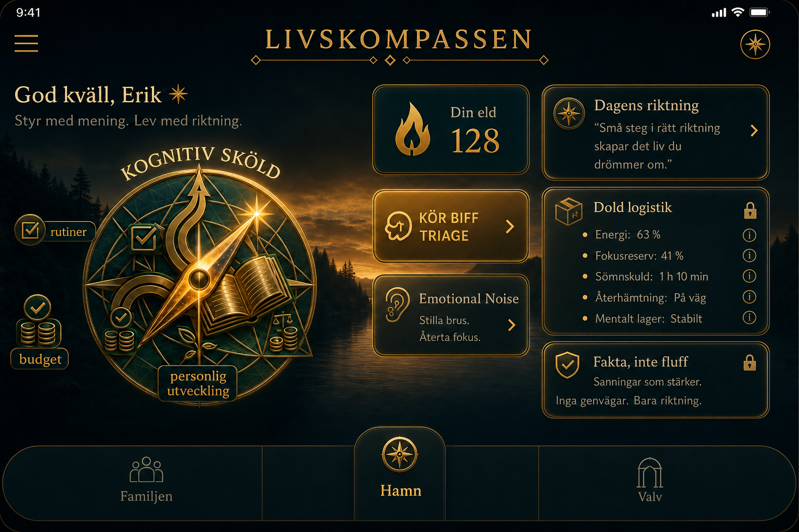
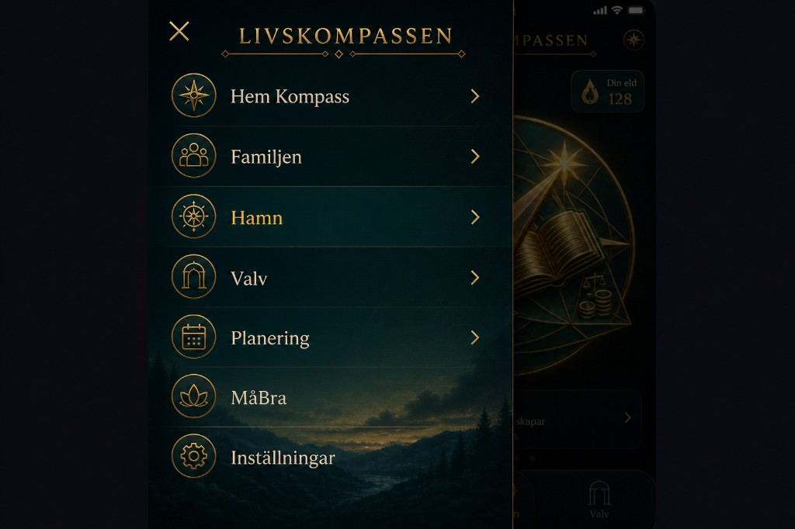
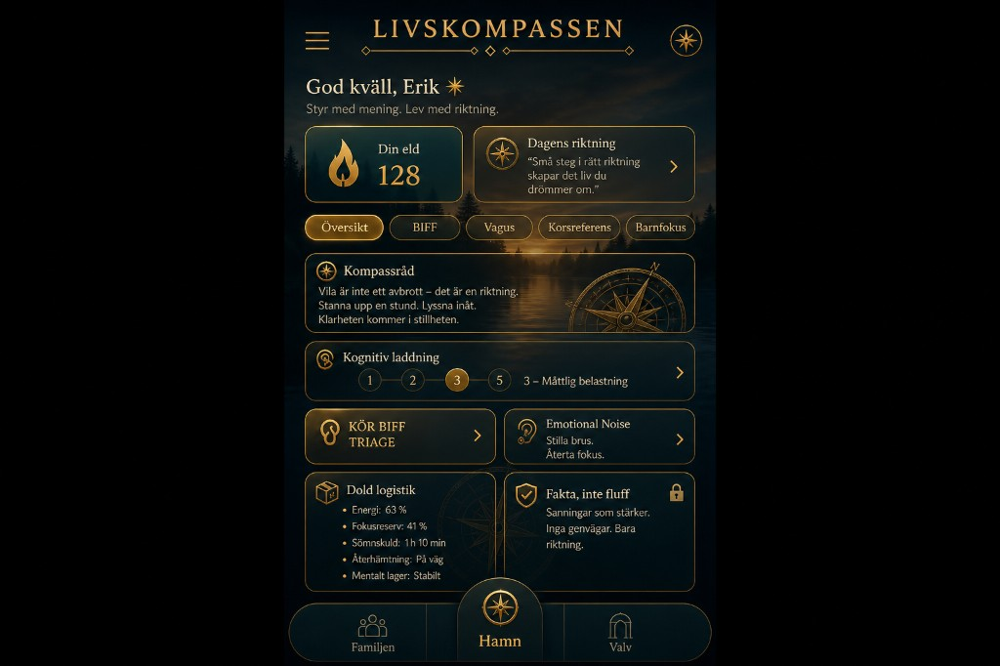
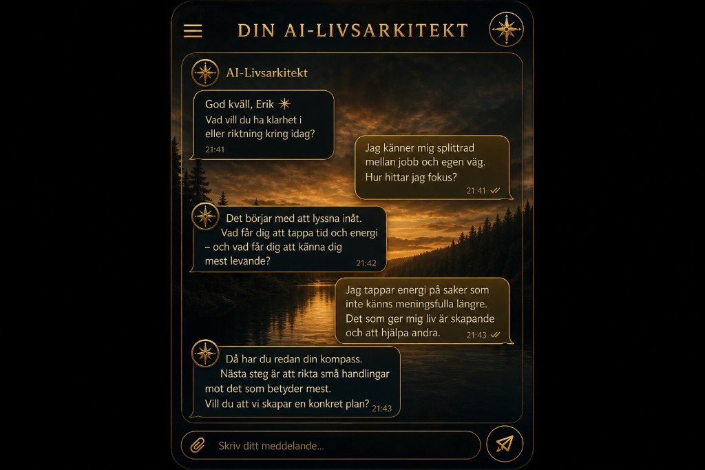
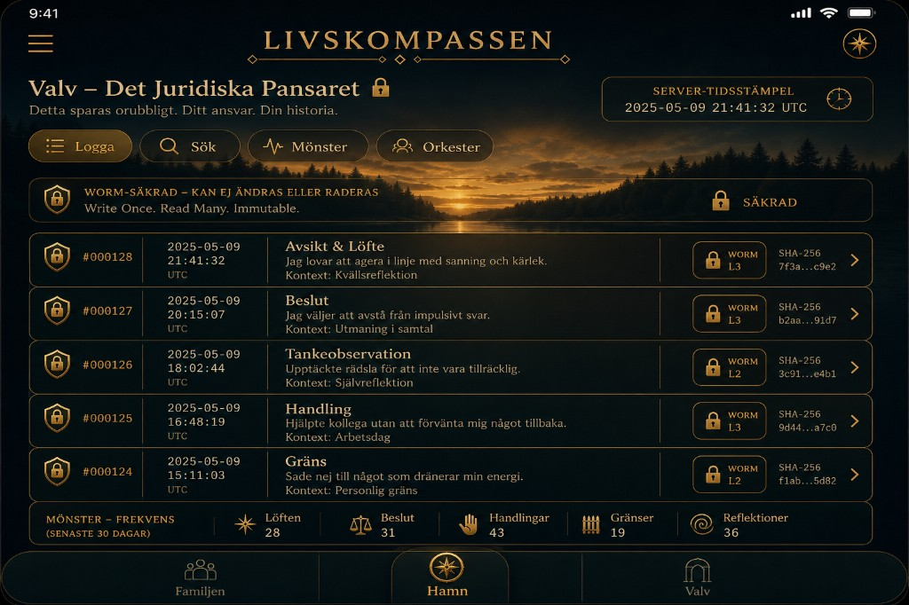
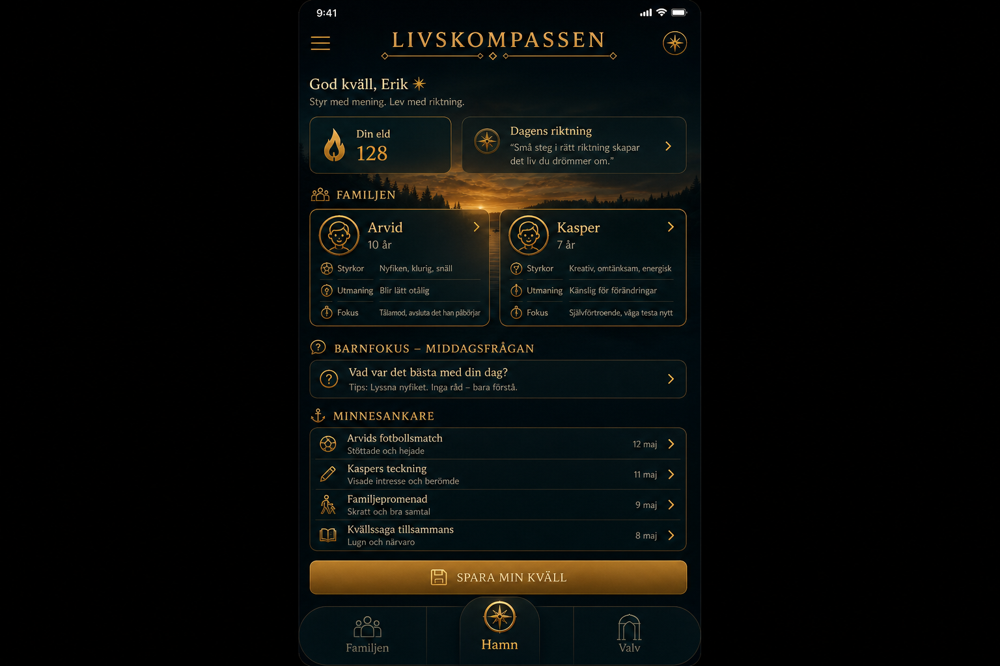
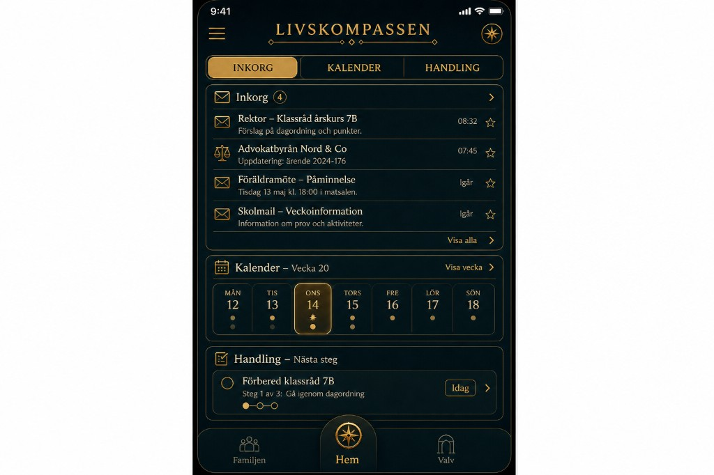
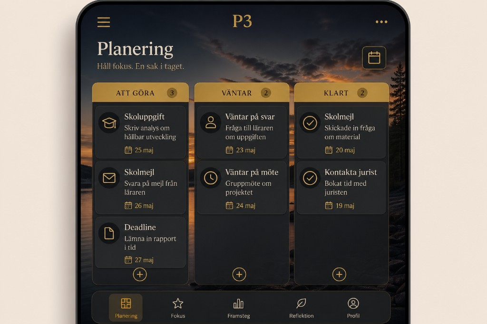
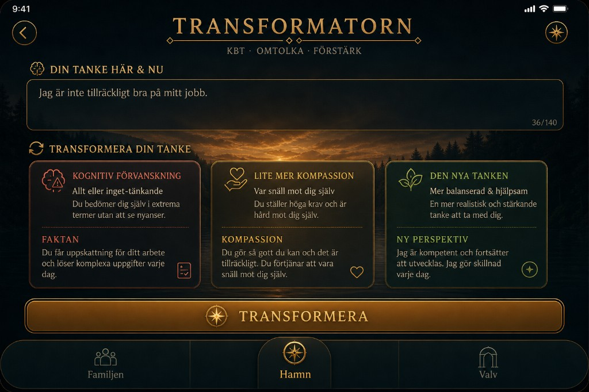
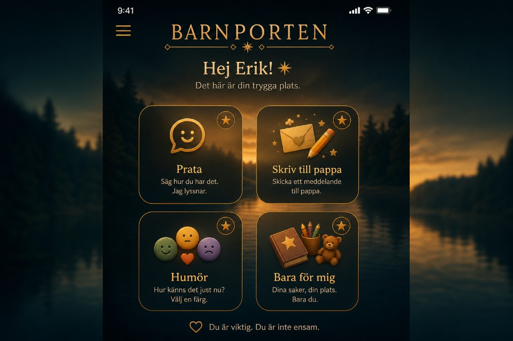

Kompakt Livskompassen
Samma tema som din referens: bakgrund + kompass låsta. Alla bilder är telefon (portrait). Kod: guldlinjer 2px (fylligare). Klicka för zoom.

Samma tema som din referens: bakgrund + kompass låsta. Alla bilder är telefon (portrait). Kod: guldlinjer 2px (fylligare). Klicka för zoom.










Spec: COMPACT-THEME-SPEC.md · Huvudgalleri